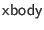

Next: Introducing New HTML Tags
Up: The Foreign Function Interface
Previous: Writing C FFI Code
Contents
JavaScript is dynamically typed, so Ur/Web type definitions imply no JavaScript code. The JavaScript identifier for each FFI function is set with the jsFunc directive. Each identifier can be defined in any JavaScript file that you ask to include with the script directive.
In contrast to C FFI code, JavaScript FFI functions take no extra context argument. Their argument lists are as you would expect from their Ur types. Only functions whose ranges take the form transaction T should have side effects; the JavaScript ``return type'' of such a function is T. Here are the conventions for representing Ur values in JavaScript.
- Integers, floats, strings, characters, and booleans are represented in the usual JavaScript way.
- Ur functions are represented in an unspecified way. This means that you should not rely on any details of function representation. Named FFI functions are represented as JavaScript functions with as many arguments as their Ur types specify. To call a non-FFI function f on argument x, run execF(f, x). A normal JavaScript function may also be used in a position where the Ur/Web runtime system expects an Ur/Web function.
- An Ur record is represented with a JavaScript record, where Ur field name N translates to JavaScript field name _N. An exception to this rule is that the empty record is encoded as null.
- option-like types receive special handling similar to their handling in C. The ``None'' constructor is null, and a use of the ``Some'' constructor on a value v is either v, if the underlying type doesn't need to use null; or {v:v} otherwise.
- Any other datatypes represent a non-value-carrying constructor C as "C" and an application of a constructor C to value v as {n:"C", v:v}. This rule only applies to datatypes defined in FFI module signatures; the compiler is free to optimize the representations of other, non-option-like datatypes in arbitrary ways.
- As in the C FFI, all abstract types of program syntax are implemented with strings in JavaScript.
- A value of Ur type transaction t is represented in the same way as for unit -> t. (Note that FFI functions skip this extra level of function encoding, which only applies to functions defined in Ur/Web.)
It is possible to write JavaScript FFI code that interacts with the functional-reactive structure of a document. Here is a quick summary of some of the simpler functions to use; descriptions of fancier stuff may be added later on request (and such stuff should be considered ``undocumented features'' until then).
- Sources should be treated as an abstract type, manipulated via:
- sc(v), to create a source initialized to v
- sg(s), to retrieve the current value of source s
- sv(s, v), to set source s to value v
- Signals should be treated as an abstract type, manipulated via:
- sr(v) and sb(s, f), the ``return'' and ``bind'' monad operators, respectively
- ss(s), to produce the signal corresponding to source s
- scur(s), to get the current value of signal s
- The behavior of the <dyn> pseudo-tag may be mimicked by following the right convention in a piece of HTML source code with a type like

. Such a piece of source code may be encoded with a JavaScript string. To insert a dynamic section, include a <script> tag whose content is just a call dyn(pnode, s). The argument pnode specifies what the relevant enclosing parent tag is. Use value "tr" when the immediate parent is <tr>, use "table" when the immediate parent is <table>, and use "span" otherwise. The argument s is a string-valued signal giving the HTML code to be inserted at this point. As with the usual <dyn> tag, that HTML subtree is automatically updated as the value of s changes.
- There is only one supported method of taking HTML values generated in Ur/Web code and adding them to the DOM in FFI JavaScript code: call setInnerHTML(node, html) to add HTML content html within DOM node node. Merely running node.innerHTML = html is not guaranteed to get the job done, though programmers familiar with JavaScript will probably find it useful to think of setInnerHTML as having this effect. The unusual idiom is required because Ur/Web uses a nonstandard representation of HTML, to support infinite nesting of code that may generate code that may generate code that.... The node value must already be in the DOM tree at the point when setInnerHTML is called, because some plumbing must be set up to interact sensibly with <dyn> tags.
- It is possible to use the more standard ``IDs and mutation'' style of JavaScript coding, though that style is unidiomatic for Ur/Web and should be avoided wherever possible. Recall the abstract type
and its constructor
, which can be used to generate new unique IDs in Ur/Web code. Values of this type are represented as strings in JavaScript, and a function fresh() is available to generate new unique IDs. Application-specific ID generation schemes may cause bad interactions with Ur/Web code that also generates IDs, so the recommended approach is to produce IDs only via calls to fresh(). FFI code shouldn't depend on the ID generation scheme (on either server side or client side), but it is safe to include these IDs in tag attributes (in either server-side or client-side code) and manipulate the associated DOM nodes in the standard way (in client-side code). Be forewarned that this kind of imperative DOM manipulation may confuse the Ur/Web runtime system and interfere with proper behavior of tags like <dyn>!
Next: Introducing New HTML Tags
Up: The Foreign Function Interface
Previous: Writing C FFI Code
Contents
2014-07-14